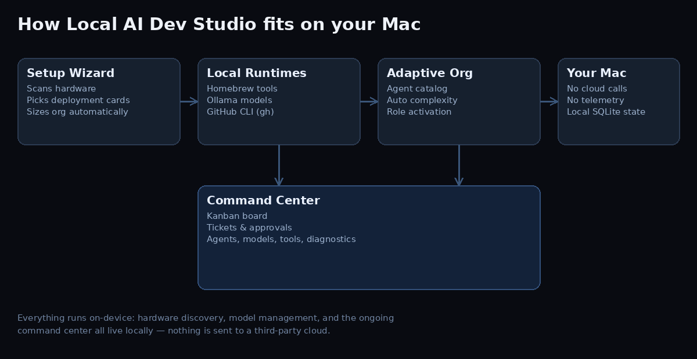

How it works

Scans chip, RAM, free disk, and developer tooling with a live progress bar and ETA.
Matches general, coding, and embedding models to your available unified memory via Ollama.
Pick your deployment targets as cards — the studio sizes the agent organization for you.
Launches a Command Center that sends tasks, tickets, approvals, and files straight to live Hermes agents.
Built for local-first teams
100% Local Zero Cloud Cost Ollama-powered Real Hermes Dispatch MIT Licensed macOS
Chip, RAM, disk, Homebrew, Ollama, Hermes, GitHub CLI, Node, and security tools like semgrep, gitleaks, and osv-scanner.
iOS, macOS, web, Android, game, full-stack, AI/ML — pick as many as you're shipping to.
A large dormant agent catalog activates only the roles relevant to your selection and computed complexity.
Kanban board, service-desk tickets, change approvals, projects with file attachments, and a live agent roster, backed by local SQLite.
Auto-creates a Hermes profile per agent and sends every action live with hermes send, with a file-based fallback audit trail either way.
Quick start
git clone https://github.com/jowen82/dispatch.git
cd dispatch
chmod +x bootstrap.command
./bootstrap.commandOr double-click bootstrap.command in Finder. The wizard opens at http://127.0.0.1:8787.
Frequently asked questions
Is Dispatch free?
Yes. It's MIT-licensed and free to use, fork, and modify. The only costs are whatever local models and disk space you choose to install.
Does it send my code or prompts to the cloud?
No. Model inference runs locally through Ollama, agent dispatch runs locally through Hermes, and all studio state is stored in a local SQLite database on your Mac.
What platforms can it plan for?
iOS, macOS, web, Android, game development, full-stack, and AI/ML — selectable as multiple deployment-type cards in the Setup Wizard.
Do I need a powerful Mac to run it?
No. The model recommender scales its suggestions to your available RAM, from lightweight 4B-class models up to larger models on 24GB+ machines.
Can I remove a model it installed?
Yes, but only with an explicit confirmation step — you must type the exact model name before it's removed. Nothing is deleted automatically.
Does it actually talk to Hermes agents, or just queue files?
Both. When the hermes CLI is on PATH, Dispatch sends live with hermes send and shows the real result on every card. Every action is also mirrored into a file-based inbox as a durable audit trail, so nothing is lost if Hermes isn't running.